Exploiting Memory Hierarchy
Memory Technology
- Static RAM (SRAM)
- 0.5ns –2.5ns, $2000 –$5000 per GB
- Dynamic RAM (DRAM)
- 50ns –70ns, $20 –$75 per GB
- Magnetic disk
- 5ms –20ms, $0.20 –$2 per GB
- Ideal memory
- Access time of SRAM
- Capacity and cost/GB of disk
Principle of Locality
Temporal locality: 最近剛存取的資源會在短時間內再存取一次 (e.g. Loop, induction variables)
Spatial locality: 靠近最近剛存取的資源會在短時間內被存取 (e.g. array)
利用現實的限制達到理想的目標: memory hierarchy
disk -> DRAM -> SRAM
讀一個 word 讀不到。到 DRAM 取 256 個 word 到 cache 內
將最近要被使用的資源(以及附近的資源)從 disk 複製到 DRAM
複製更常用的資源從 DRAM 到 SRAM
Memory Hierarchy Levels
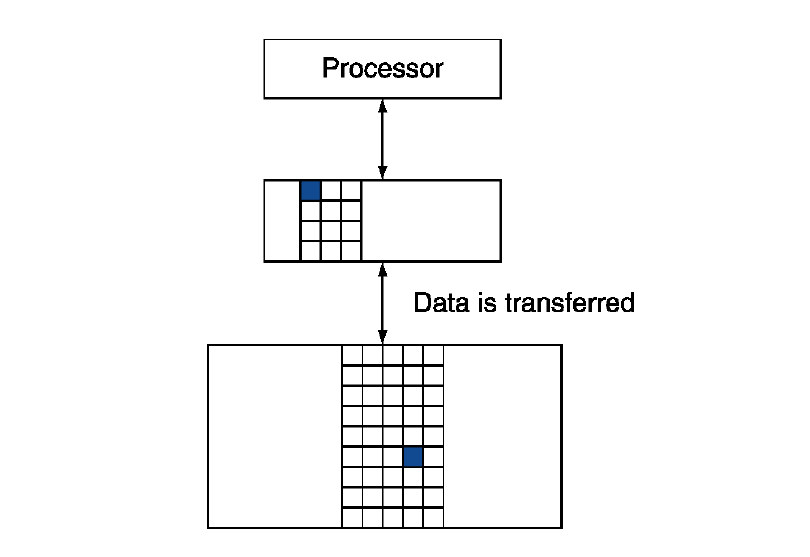
如果在最上層的 cache 有資料: hit
如果沒有: miss，從下層複製上去 (need miss penalty)
Cache Memory
最接近 CPU
Direct Mapped Cache
1 個 cache mapping 到多個 memory
(Block address) % (#Blocks in cache)
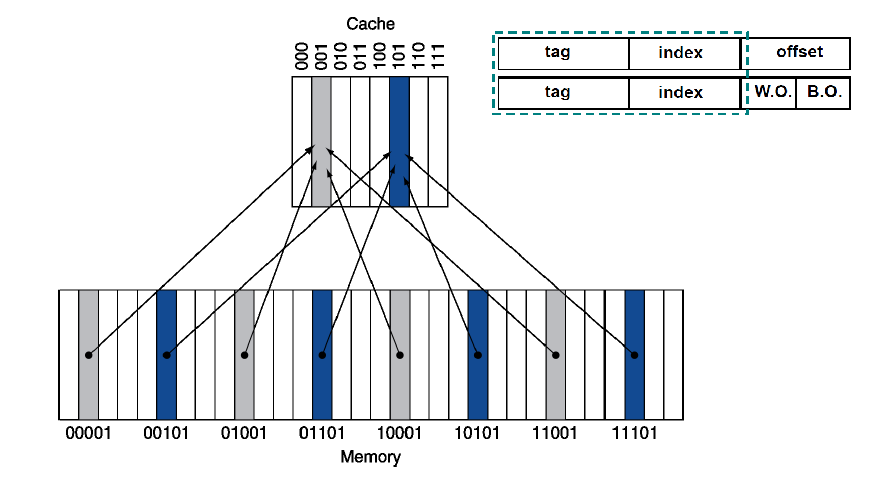
- tag: 來自哪個 memory
- Store block address (only high-order bits)
- valid bit: 1/0 區分是否有 data
- index: cache 的哪個位置
- offset:
- byte offset: default 2bit
- word offset: 這個 block 的第幾個 word
Example
8-blocks, 1 word/block, direct mapped
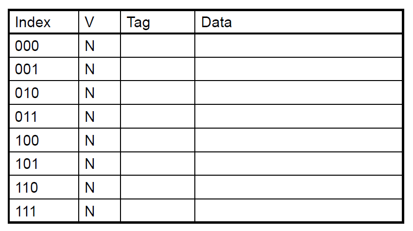
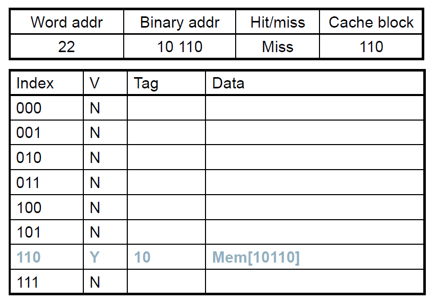
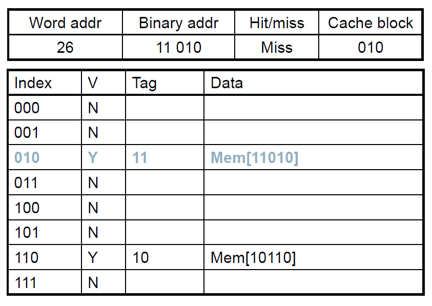
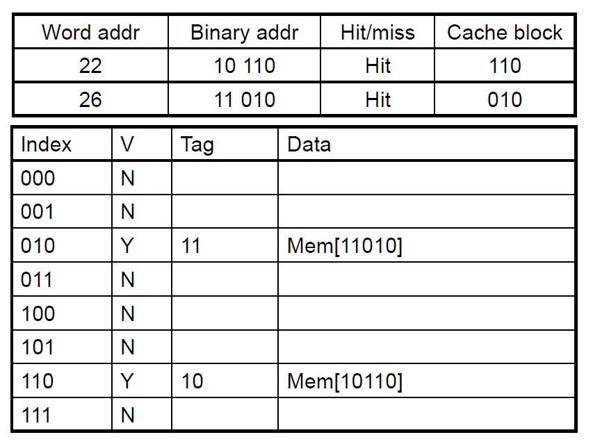
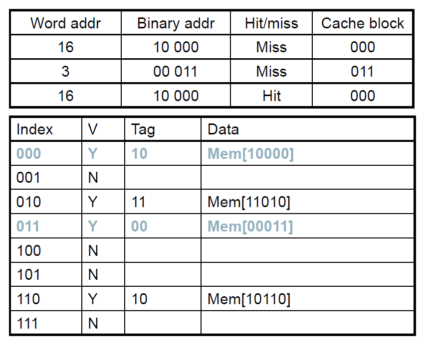
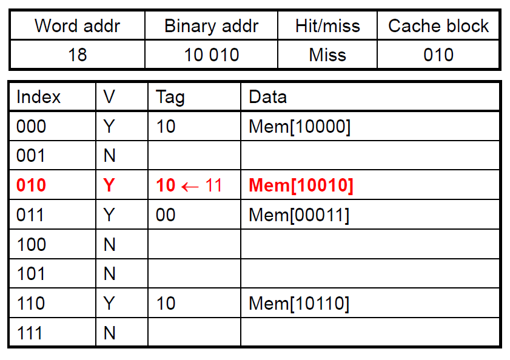
Address Subdivision
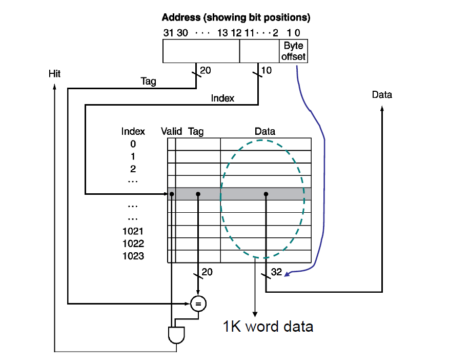
總 bits 數計算:
cache size: blocks
block data size: words
block tag size: ( words = bytes)
total number of bits:
for example: 16KB data, 4-word blocks, assume a 32-bit address
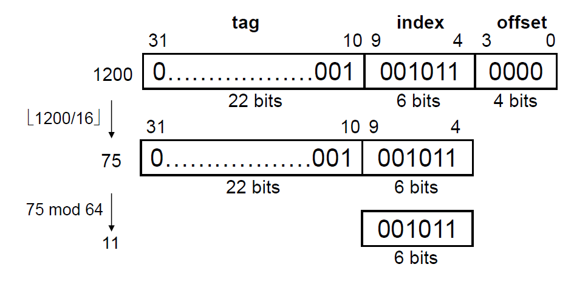
Block Size?
- 大的 blocks 可以減少 miss rate (spatial locality)
- 在相同的 cache size 中
- 大的 block 會使 block 數量減少，增加 competition，提高 miss rate
- 大的 block，占 cache 空間但沒有人 access，造成浪費
e.g.
128 x 128 access 16 x 16
8 larger blocks vs 16 smaller blocks
16 快: 因為 16 block 紀錄所有 16 個 array，第一次 miss，後面所有都 hit
8 慢: 多 load 在 window 外面的東西，但是不會用 > pollution
Cache Misses
有關Cache的read/write through/back/allocate的意義
Cache hits:
- 直接從 CPU 讀資料
Cache Misses:
- Stall the CPU pipeline
- Read-Through
- 直接從 main memory 讀到 CPU
- No Read-Through
- 從 main memory 讀到 cache 再讀到 CPU
- Instruction cache miss
- Restart instruction fetch
- Data cache miss
- Complete data access
Write hits:
- Write-Through
- 每次的 cache 寫完不會直接結束，會再寫到 memory > for consistent (但很慢)
- Solution: write buffer
- Write-Back
- 只 update cache，持續觀察 cache，當被 update 的 cache 要被 replace 時再寫回 memory
Write miss:
- Write-Through
- 直接寫 memory (don’t fetch the block)
- Write-Back
- fetch the block into cache
Main Memory Supporting Caches
- Use DRAMs for main memory, connected by fixed-width clocked bus
Miss penalty for 4-word block, 1-word-wide DRAM
address transfer (1) + word (4) x per DRAM access (15) + per data transfer (1) = 65 bus cycles
Bandwidth = 16 bytes / 65 cycles = 0.25 B/cycle
Increasing Memory Bandwidth
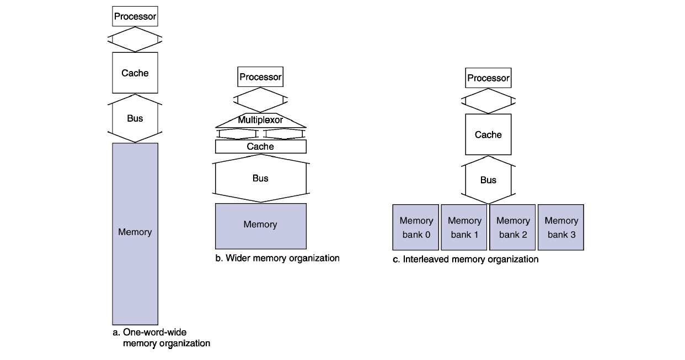
- 4-word wide memory
- Miss penalty = 1 + 15 + 1 = 17 bus cycles
- Bandwidth = 16 bytes / 17 cycles = 0.94 B/cycle
- 4-bank interleaved memory
- Miss penalty = 1 + 15 + 4 (送四次) ×1 = 20 bus cycles
- Bandwidth = 16 bytes / 20 cycles = 0.8 B/cycle
Advanced DRAM Organization
- Bits in a DRAM are organized as a rectangular array: DRAM accesses an entire row
- Double data rate (DDR) DRAM
- Quad data rate (QDR) DRAM
Cache Performance
- Components of CPU time
- Program execution cycles (include cache hit)
- Memory stall cycles (mainly cache misses)
e.g.
Given
- I-cache miss rate = 2%
- D-cache miss rate = 4%
- Miss penalty = 100 cycles
- Base CPI (ideal cache) = 2
- Load & stores are 36% of instructions
Miss cycles per instruction
- I-cache: 0.02 × 100 = 2
- D-cache: 0.36 × 0.04 ×100 = 1.44
Actual CPI = 2 + 2 + 1.44 = 5.44
i-cache: branch / not-branch 兩種情況，miss rate 較少
Average Access Time
Average memory access time (AMAT)
e.g.
- CPU with 1ns clock
- hit time = 1 cycle
- miss penalty = 20 cycles
- cache miss rate = 5%
AMAT = 1 + 0.05 × 20 = 2 ns
Summary
- CPU performance increased > Miss penalty becomes more significant
- Decreasing base CPI > Greater proportion of time spent on memory stalls
- Increasing clock rate > Memory stalls account for more CPU cycles
Associative Caches
- fully associative
- memory 要搬到 cache 沒有限制，有空的就可以搬進去 (可以放到 cache 的任意位置)
- 對每個 entry 都需要 comparator (貴)
- n-way set associative
- 分為多個 set，每個 set 包含 n 個 entries
- block address 有一個欄位對應到 cache 的 set address ((Block number) modulo (#Sets in cache))
- n 個 comparator (要知道 block 在 set 的哪裡)
- direct
- 1-way set
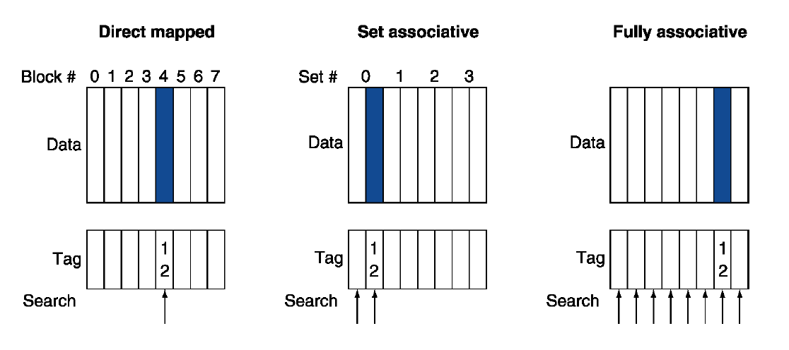
Example
For a cache with 8 entries
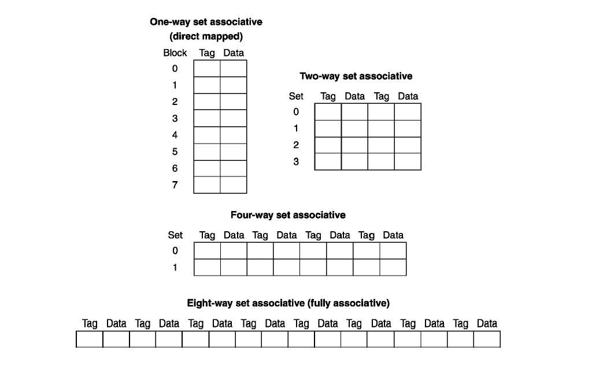
Block access sequence: 0, 8, 0, 6, 8
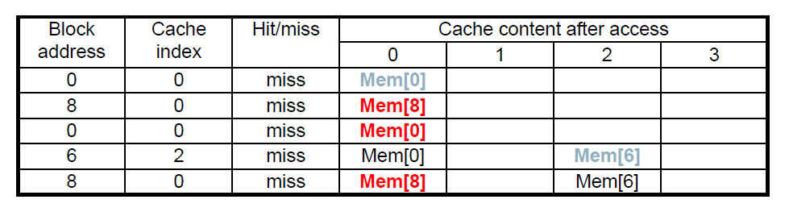
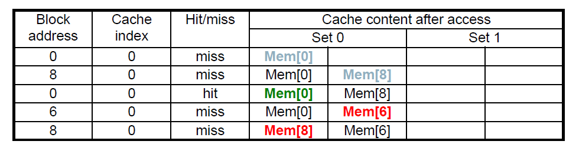
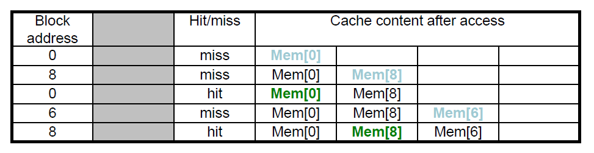
How Much?
associativity 上升，miss rate 下降，但效果會逐漸下降
e.g. Simulation of a system with 64KBD-cache, 16-word blocks, SPEC2000
- 1-way: 10.3%
- 2-way: 8.6%
- 4-way: 8.3%
- 8-way: 8.1%
Organization
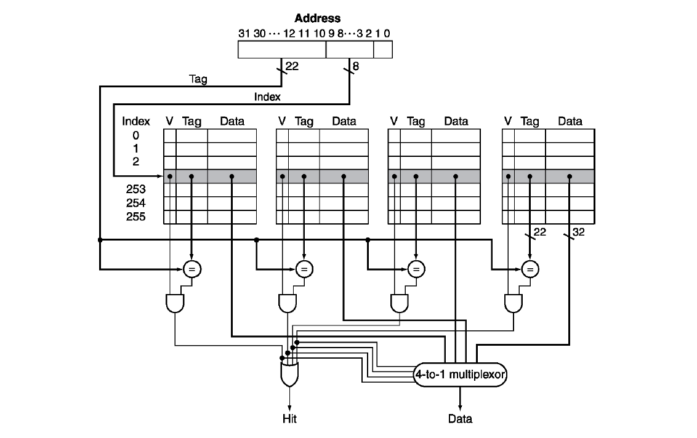
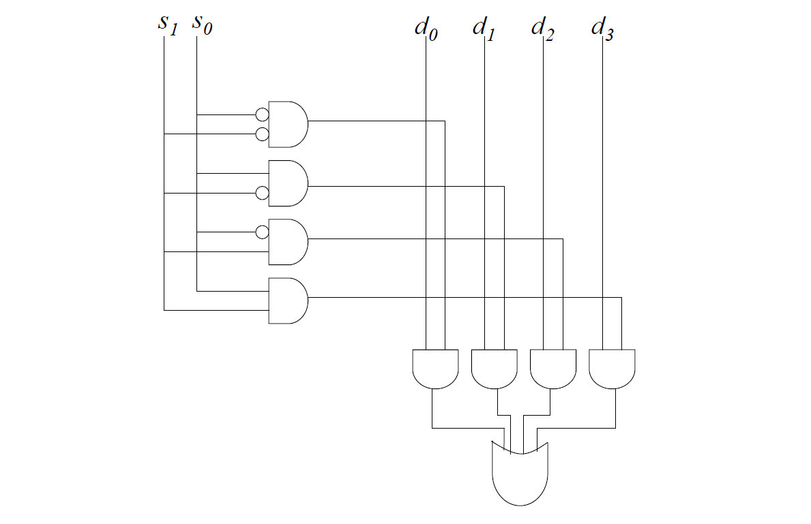
Replacement Policy
- Direct mapped
- no choice
- Set associative
- non-valid 優先被 replace
- Least-recently used (LRU)
- 最近被 access 到的留下來
- Simple for 2-way, manageable for 4-way, too hard beyond that
- Random
Multilevel Caches
- Primary cache attached to CPU
- Small, but fast
- Level-2 cache services misses from primary cache
- Larger, slower, but still faster than main memory
- Main memory services L-2 cache misses
- Some high-end systems include L-3 cache
Example
Given
- CPU base CPI = 1, clock rate = 4GHz
- Miss rate/instruction = 2%
- Main memory access time = 100ns
just primary cache:
- Miss penalty = 100ns / 0.25ns = 400 cycles
- Effective CPI = 1 + 0.02 × 400 = 9
with L-2 cache:
- Access time = 5ns
- Global miss rate to main memory = 0.5%
- Primary miss with L-2 hit > Penalty = 5ns / 0.25ns = 20 cycles
- Primary miss with L-2 miss > Extra penalty = 400 cycles
- CPI = 1 + 0.02 × 20 + 0.005 × 400 = 3.4
Considerations
primary cache: hit time (cache較小)
L-2 cache: miss rate (avoid main memory access) (cache較大)
L-1 cache size < single cache size
L-1 block size < L-2 block size
Interactions with Advanced CPUs
Out-of-order CPUs can execute instructions during cache miss
- Pending store stays in load/store unit
- Dependent instructions wait in reservation stations
- Independent instructions continue
Effect of miss depends on program data flow
Interactions with Software
Misses depend on memory access patterns
- Algorithm behavior
- Compiler optimization for memory access
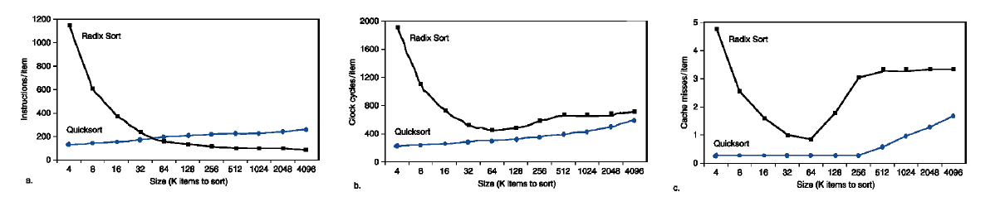
Software Optimization via Blocking
Goal: maximize accesses to data before it is replaced
把一直換 index 的一次加一個 block size，inblock miss 伴隨一堆 hit
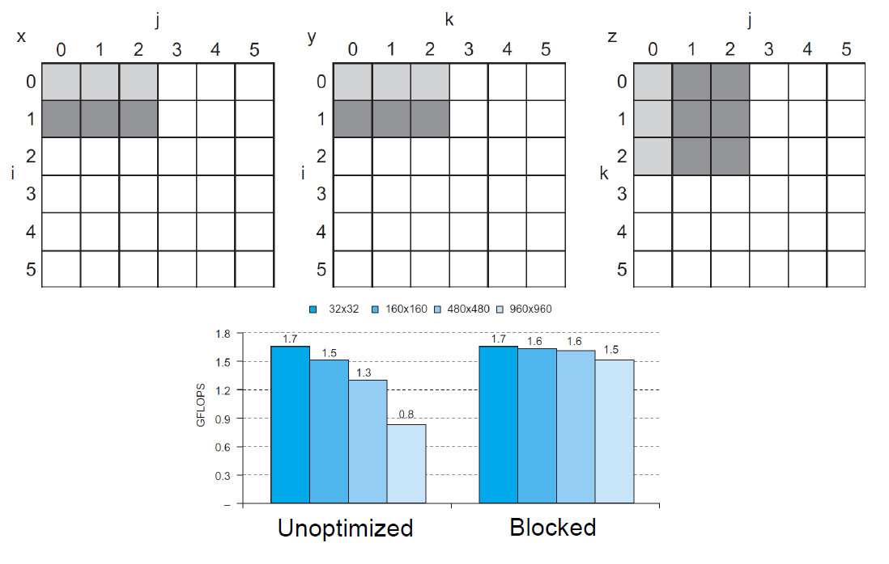
Dependability
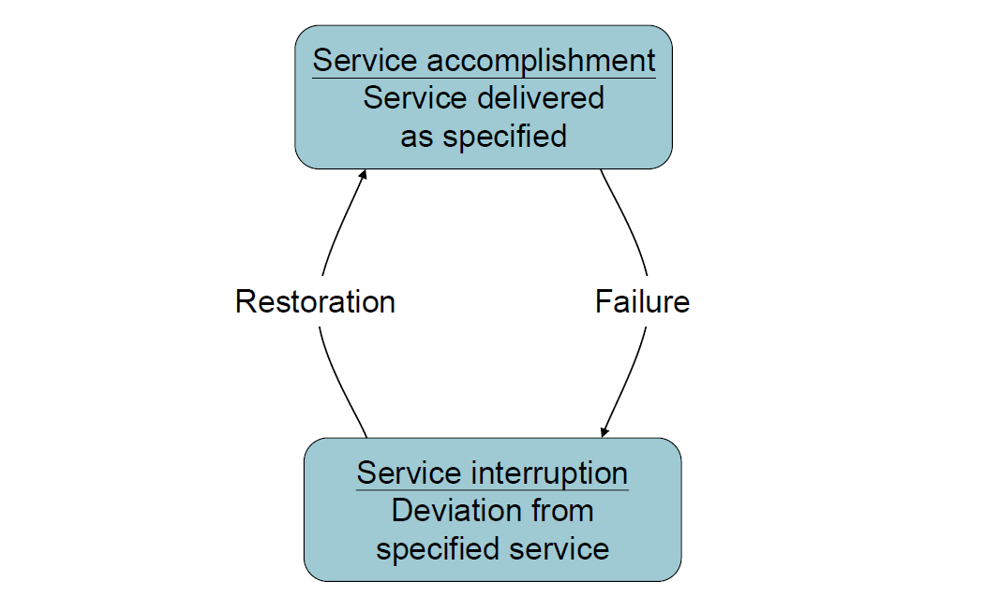
Measures
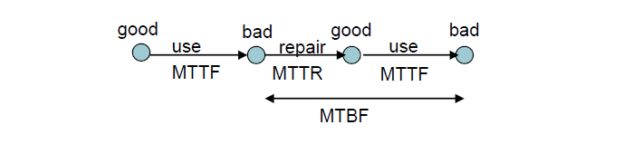
Reliability: mean time to failure (MTTF)
Service interruption: mean time to repair (MTTR)
Mean time between failures: MTBF = MTTF + MTTR
Availability = MTTF / (MTTF + MTTR)
Improving Availability:
- Increase MTTF: fault avoidance, fault tolerance, fault forecasting
- Reduce MTTR: improved tools and processes for diagnosis and repair
The Hamming SEC Code
Hamming distance: 兩個字符串對應位置的不同字符的個數
e.g. 1011101 與 1001001 之間的 Hamming distance 是2。
SEC/DED Code
Add an additional parity bit for the whole word ()
Make Hamming distance = 4
Let H = SEC parity bits
- even, even, no error
- odd, odd, correctable single bit error
- even, odd, error in pnbit
- odd, even, double error occurred
Virtual Memory
Use main memory as a “cache” for secondary (disk) storage
- Program share main memory
- 每個 program 會拿到 private virtual address space
- CPU and OS translate virtual addresses to physical addresses
- VM “block” is called a page
- VM translation “miss” is called a page fault
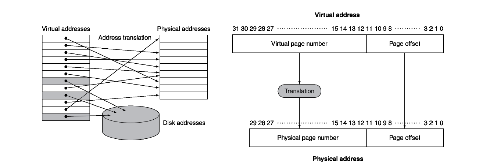
Page Fault Penalty
page fault > page fetched from disk (超慢)
solution:
- Fully associative placement
- Smart replacement algorithms
Page Tables
Stores placement information
- Array of page table entries
- indexed: virtual page number
- 在 CPU 的 page table register 會指向在 physical memory 的 page table
If page is present in memory
- PTE stores the physical page number
- Plus other status bits
If page is not present
- PTE can refer to location in swap space on disk
Translation Using a Page Table
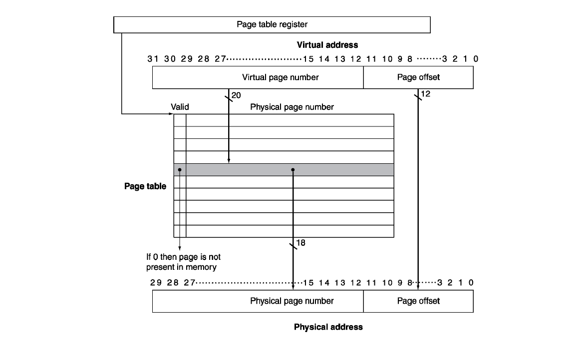
Mapping Pages to Storage
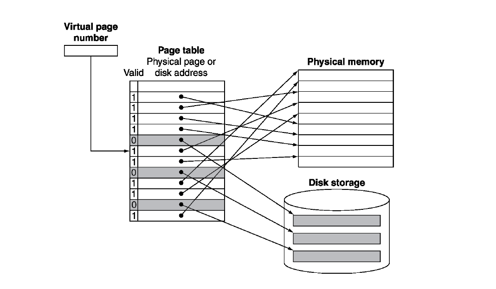
Replacement and Writes
- To reduce page fault rate, prefer least-recently used (LRU) replacement
- 當 access page 時 Reference bit (aka use bit) 設為 1
- OS 會定時清理為 0
- use bit 為 0 的為不常用的
- Disk writes take millions of cycles!
- Block at once, not individual locations
- Write through is impractical
- Use write-back
- Dirty bit in PTE set when page is written